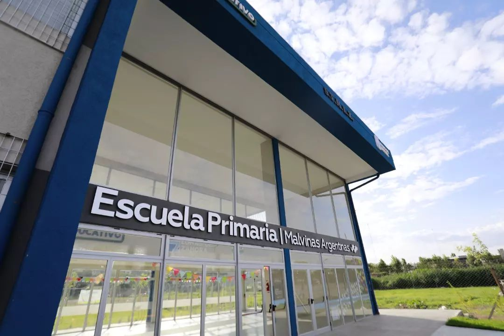

VISIÓN Y MISIÓN:
El Instituto asume la tarea de realizar la experiencia compartida de valorar a cada persona y a cada elemento de la naturaleza, desde una visión crítica del mundo en el que vivimos y comprometidos con la construcción de actitudes sociales más justas para el futuro. El punto de partida es una mirada abierta y flexible a las potencialidades y sentimientos de cada alumno, a los adelantos del conocimiento y sus aplicaciones, a la pluralidad de sentidos que suponen las diferencias, a las necesidades permanentes de innovación y comprensión del mundo y fundamentalmente, al encuentro con “el otro”. En este sentido, en acuerdo al Marco Curricular Referencial de la Pcia. de Bs. As.; se sostiene “un enfoque integrador de la enseñanza, que supera los límites disciplinares y relaciona el desarrollo de las capacidades en conjugación con los contenidos curriculares.”
Noticias breves:
Visita al Teatro.
Los niños y las niñas visitaron muy emocionados/as el Teatro Municipal en una excursión educativa. Con ojos curiosos y sonrisas brillantes, exploraron el majestuoso teatro. Fueron guiados por pasillos decorados y aprendieron sobre la importancia cultural del teatro. Experimentaron la emoción de estar en el escenario, sintiendo el brillo de los focos y la grandeza del lugar. Durante la visita, escucharon historias fascinantes sobre actuaciones legendarias y artistas famosos que habían pisado ese escenario. Los niños y niñas se fueron inspirados y con una nueva apreciación por las artes escénicas, llevando consigo recuerdos inolvidables de su día en el Teatro Municipal de Lomas de Zamora.
Visitando la Reserva Natural.
Inolvidable excursión en la Reserva Natural Santa Catalina.Guiados por senderos y maravillados por la biodiversidad, observaron aves exóticas, plantas autóctonas y animales silvestres en su hábitat natural. Se sumergieron en la serenidad del bosque, respirando aire fresco y escuchando los sonidos tranquilizadores de la naturaleza. Durante la visita, aprendieron sobre la importancia de la conservación y la preservación del medio ambiente. Al final del día, se fueron con un profundo aprecio por la belleza natural de Santa Catalina y un renovado compromiso con la protección de nuestro planeta.
Festejo del Día de las Infancias.
Este año, el Polo Educativo Malvinas Argentinas celebró el Día de las Infancias con un evento lleno de alegría y diversión. Los niños y niñas se unieron para celebrar juntos en un ambiente de aprendizaje y creatividad. Las actividades comenzaron temprano en la mañana , donde los pequeños Durante todo el día, el Polo Educativo se transformó en un mundo mágico lleno de juegos, música y risas. En el área de talleres, los niños participaron en emocionantes actividades artísticas y científicas. Desde la creación de manualidades hasta experimentos científicos simples, cada actividad fomentó la imaginación y el pensamiento creativo. El Día de las Infancias en el Polo Educativo Malvinas Argentinas fue un día inolvidable lleno de diversión, aprendizaje y vínculos comunitarios. Agradecemos a todos los participantes, padres, maestros y voluntarios por hacer de este día una celebración tan especial para nuestros niños y niñas.